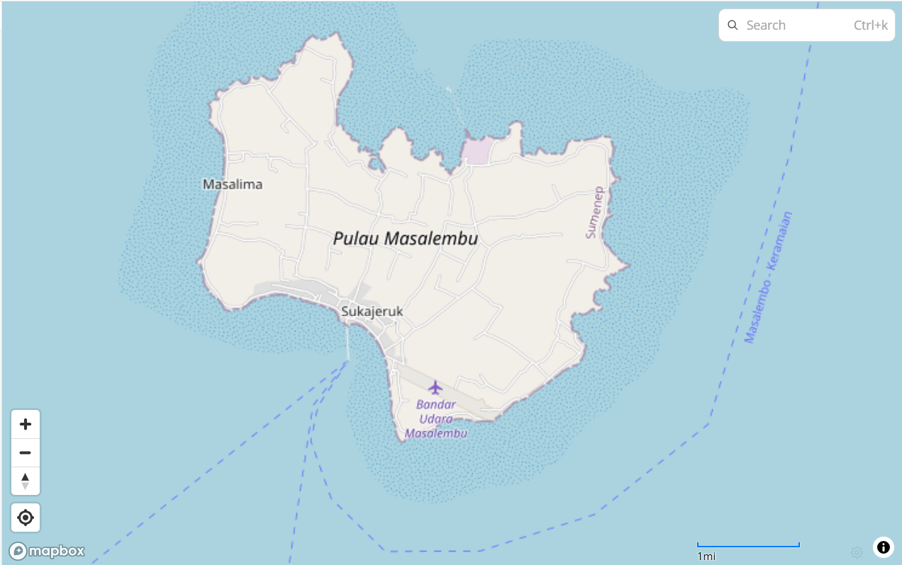
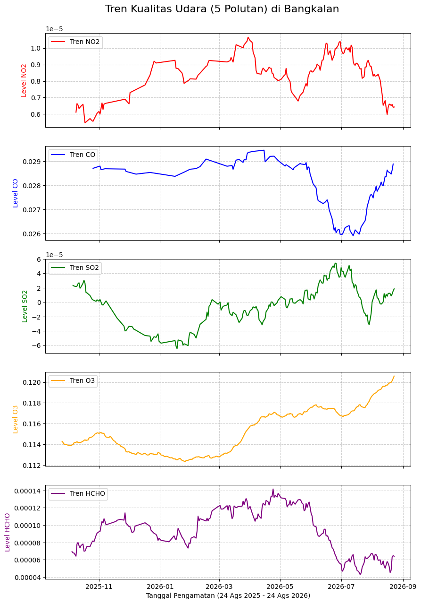
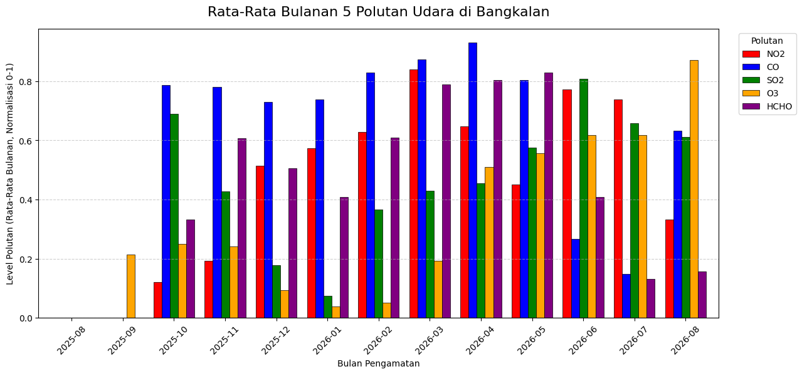

Tugas_Pertemuan1#
Bussines Understanding#
Indeks Kualitas Udara (Air Quality Index / AQI) adalah metrik pengukuran standar yang digunakan untuk menilai dan mengomunikasikan tingkat keparahan polusi udara di suatu wilayah kepada masyarakat umum. Nilai AQI bekerja layaknya termometer; semakin tinggi angkanya, semakin buruk kualitas udaranya dan semakin besar risiko dampaknya terhadap kesehatan manusia serta lingkungan sekitar.
Unsur-Unsur Polutan Kualitas Udara: Kondisi kualitas udara sangat bergantung pada konsentrasi gas dan partikel berbahaya di atmosfer. Berdasarkan data satelit yang diamati dalam studi ini, lima unsur polutan utama yang menjadi parameter pengukuran meliputi:
NO2 (Nitrogen Dioksida): Gas beracun dan reaktif yang sebagian besar bersumber dari emisi gas buang kendaraan bermotor dan pembakaran bahan bakar fosil.
CO (Karbon Monoksida): Gas tidak berwarna dan tidak berbau yang dihasilkan dari proses pembakaran tidak sempurna. Gas ini sangat berbahaya jika terhirup karena dapat menghambat suplai oksigen dalam sirkulasi darah.
SO2 (Sulfur Dioksida): Gas berbau menyengat yang umumnya berasal dari pembakaran batu bara, aktivitas industri, atau fenomena vulkanik. Gas ini merupakan pemicu utama terjadinya hujan asam.
O3 (Ozon Permukaan): Berbeda dengan lapisan ozon di atmosfer atas yang melindungi bumi, ozon di permukaan tanah adalah polutan sekunder yang terbentuk dari reaksi kimia polutan lain (seperti NO2 dan emisi industri) dengan sinar matahari.
HCHO (Formaldehida): Senyawa organik yang mudah menguap (VOC) yang keberadaannya di udara mengindikasikan tingginya aktivitas industri, pembakaran biomassa, atau polusi fotokimia.
Data Understanding#
Mengumpulkan Data Udara dari Copernicus Data Space#
Data kualitas udara dalam analisis ini diekstraksi dari satelit Sentinel-5P melalui layanan antarmuka pemrograman openEO pada Copernicus Data Space Ecosystem. Pengambilan data difokuskan pada pengamatan kualitas udara di wilayah Bangkalan, Madura—yang mencakup area sekitar kampus Universitas Trunojoyo Madura—dengan rincian ekstraksi sebagai berikut:
Rentang Waktu: 24 Agustus 2025 s.d. 24 Agustus 2026.
Batas Wilayah (Bounding Box): Menggunakan parameter poligon spasial dengan batas Barat:
114.39276, Selatan:-5.5897084, Timur:114.4538978, dan Utara:-5.5323937.Parameter Pengambilan: Pengambilan data dilakukan secara iteratif untuk 5 bands polutan (NO2, CO, SO2, O3, HCHO) guna menghindari limitasi sistem unduhan massal dari satelit.
Metode Agregasi: Data mentah diagregasi secara spasial (mengambil nilai rata-rata dari seluruh titik piksel di dalam poligon wilayah) dan secara temporal (dijadikan rata-rata harian) agar menghasilkan tren observasi yang konsisten.
print("Kernel jalan!")
Kernel jalan!
import openeo
connection = openeo.connect("openeo.dataspace.copernicus.eu").authenticate_oidc()
Authenticated using refresh token.
Membuat Datacube menggunakan koordinat#
aoi = {
"type": "FeatureCollection",
"features": [
{
"type": "Feature",
"properties": {"id": "aoi_1"},
"geometry": {
"type": "Polygon",
"coordinates": [
[
[114.39276, -5.5634872],
[114.3971417, -5.5711689],
[114.415093, -5.571846],
[114.4227172, -5.5897084],
[114.4362736, -5.5862047],
[114.44798, -5.5776159],
[114.4538978, -5.565637],
[114.452815, -5.5471518],
[114.4302995, -5.5441407],
[114.4070893, -5.5323937],
[114.3964722, -5.5414599],
[114.39276, -5.5634872]
]
],
},
}
],
}
# Membuat datacube untuk 5 unsur polutan secara terpisah
unsur_polutan = ["NO2", "CO", "SO2", "O3", "HCHO"]
datacubes = {}
for polutan in unsur_polutan:
datacubes[polutan] = connection.load_collection(
"SENTINEL_5P_L2",
temporal_extent=["2025-08-24", "2026-08-24"],
spatial_extent={"west": 114.39276, "south": -5.5897084, "east": 114.4538978, "north": -5.5323937},
bands=[polutan],
)
# Now aggregate by day to avoid having multiple data per day
# let's create a spatial aggregation to generate mean timeseries data
for polutan in unsur_polutan:
datacubes[polutan] = datacubes[polutan].aggregate_temporal_period(reducer="mean", period="day")
datacubes[polutan] = datacubes[polutan].aggregate_spatial(reducer="mean", geometries=aoi)
Eksekusi Code#
# Eksekusi antrean unduhan untuk masing-masing polutan
for polutan in unsur_polutan:
print(f"Mengeksekusi unduhan {polutan}...")
datacubes[polutan].execute_batch(
title=f"Analisis {polutan}",
outputfile=f"kualitas_udara_{polutan}.nc"
)
Mengeksekusi unduhan NO2...
0:00:00 Job 'j-2608310411054f92874789ccb6ec1d17': send 'start'
0:00:02 Job 'j-2608310411054f92874789ccb6ec1d17': queued (progress 0%)
0:00:07 Job 'j-2608310411054f92874789ccb6ec1d17': queued (progress 0%)
0:00:14 Job 'j-2608310411054f92874789ccb6ec1d17': queued (progress 0%)
0:00:22 Job 'j-2608310411054f92874789ccb6ec1d17': queued (progress 0%)
Eksplorasi Data#
Tahapan eksplorasi ini berfokus pada analisis visual dan pembersihan data (Data Preprocessing), yang mencakup:
Visualisasi Peta: Memetakan lokasi titik koordinat kotak pengamatan menggunakan library Folium untuk verifikasi cakupan spasial.
Visualisasi Grafik: Data divalidasi dan dinormalisasi (Min-Max 0-1) lalu divisualisasikan dalam bentuk grafik garis (line chart) bertumpuk serta diagram balok berkelompok (grouped bar chart) rata-rata bulanan. Visualisasi ini bertujuan untuk melihat dan membandingkan fluktuasi kelima polutan yang memiliki skala pengukuran berbeda secara seimbang.
Identifikasi Anomali: Melakukan identifikasi missing values (data satelit harian yang kosong/NaN akibat tertutup awan) serta mendeteksi keberadaan outliers dan data noise yang mungkin dipengaruhi oleh kesalahan sensor satelit.
Pembuatan Output: Mengonversi data dari format mentah NetCDF (
.nc) menjadi format tabel dan mengekspornya sebagai file.csvuntuk kemudahan pemodelan di aplikasi data mining lebih lanjut.
Lokasi Data#
Data yang diambil berasal dari kepulauan masalembu yang berada di sumenep

import xarray as xr
import matplotlib.pyplot as plt
# load the results (memuat 5 file terpisah ke dalam dictionary)
unsur_polutan = ["NO2", "CO", "SO2", "O3", "HCHO"]
data_udara_dict = {}
for polutan in unsur_polutan:
data_udara_dict[polutan] = xr.load_dataset(f"kualitas_udara_{polutan}.nc")
# Menghitung rolling mean 30 hari untuk masing-masing polutan
for polutan in unsur_polutan:
data_udara_dict[polutan] = data_udara_dict[polutan].rolling(t=30).mean()
warna_grafik = ["red", "blue", "green", "orange", "purple"]
# Membuat layout 5 baris grafik
fig, axes = plt.subplots(nrows=5, ncols=1, figsize=(10, 15), sharex=True)
for i, (polutan, warna) in enumerate(zip(unsur_polutan, warna_grafik)):
# Mengambil data spesifik dari dictionary
data_udara = data_udara_dict[polutan]
axes[i].plot(data_udara.t, data_udara[polutan].to_numpy().flatten(), color=warna, label=f"Tren {polutan}")
axes[i].set_ylabel(f"Level {polutan}", color=warna)
axes[i].legend(loc="upper left")
axes[i].grid(True, linestyle="--", alpha=0.6)
plt.xlabel("Tanggal Pengamatan (24 Ags 2025 - 24 Ags 2026)")
plt.suptitle("Tren Kualitas Udara (5 Polutan) di Bangkalan", fontsize=16, y=0.92)
# Ekspor grafik menjadi gambar agar bisa dimasukkan ke catatan
plt.savefig("grafik_5_polutan.png", bbox_inches="tight")
plt.show()

import pandas as pd
import numpy as np
# Membuat DataFrame kosong untuk menampung rata-rata bulanan
df_bulanan = pd.DataFrame()
for polutan in unsur_polutan:
# Mengambil nilai waktu dan nilai polutan dari xarray
waktu = data_udara_dict[polutan].t.values
nilai_asli = data_udara_dict[polutan][polutan].to_numpy().flatten()
# Normalisasi Min-Max (0 sampai 1)
nilai_norm = (nilai_asli - np.nanmin(nilai_asli)) / (np.nanmax(nilai_asli) - np.nanmin(nilai_asli))
# Memasukkan ke DataFrame Pandas sementara untuk diolah
df_temp = pd.DataFrame({'Waktu': waktu, polutan: nilai_norm})
# Ekstrak Tahun dan Bulan (Contoh format: 2025-08)
df_temp['Bulan'] = pd.to_datetime(df_temp['Waktu']).dt.to_period('M')
# Hitung rata-rata per bulan dan gabungkan
rata2_bulanan = df_temp.groupby('Bulan')[polutan].mean()
df_bulanan[polutan] = rata2_bulanan
# Mengubah format indeks bulan menjadi teks agar rapi di sumbu X
df_bulanan.index = df_bulanan.index.astype(str)
# Plotting Diagram Balok Berkelompok
ax = df_bulanan.plot(kind='bar', figsize=(14, 6), color=warna_grafik, width=0.8, edgecolor='black', linewidth=0.5)
# Pengaturan visualisasi sumbu dan label
ax.set_ylabel("Level Polutan (Rata-Rata Bulanan, Normalisasi 0-1)")
ax.set_xlabel("Bulan Pengamatan")
ax.legend(loc="upper right", bbox_to_anchor=(1.12, 1), title="Polutan")
ax.grid(axis='y', linestyle="--", alpha=0.6)
plt.xticks(rotation=45)
plt.title("Rata-Rata Bulanan 5 Polutan Udara di Bangkalan", fontsize=16, pad=15)
# Ekspor grafik menjadi gambar
plt.savefig("grafik_balok_bulanan.png", bbox_inches="tight")
plt.show()
